관악산(관嶽山, 629.9m), 삼성산(455m)
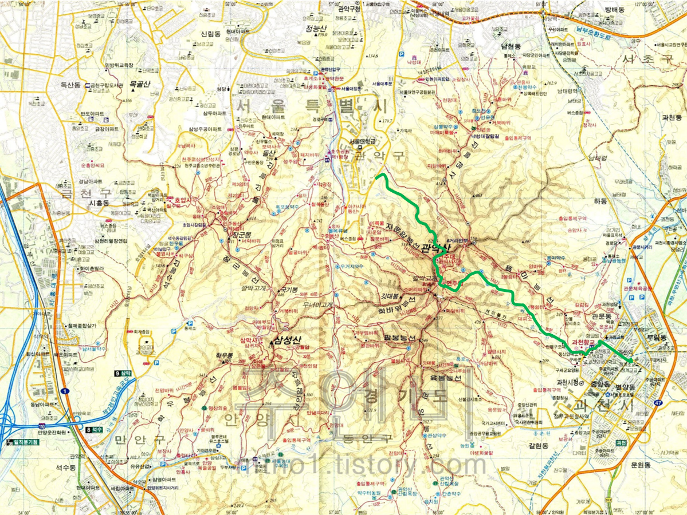
| 2020년 09월 27일 |
서울대 공동기기원, 수영장 능선, 탱크바위, 족발바위(?), 물개바위(?), 연주대/나한전,
연주암, 자하동천, 과천향교, 과천역 |
느낀 점, 배운 것
- 사당능선 전망대에서의 서울 시내 전경이 일품이다. 여의도 불꽃 놀이를 봐도 아주 멋지게 보일 듯 하다.
- 남태령 방향으로 수도방위사령부가 있다.
- 매우 크고 험한 산이다. 지금은 위험 구간에 계단이 많이 놓여졌다.
- 관악산 북쪽은 서울시 관악구이고, 남쪽은 경기도 과천시다. 삼성산 남서쪽은 안양시이다.
사당능선
| 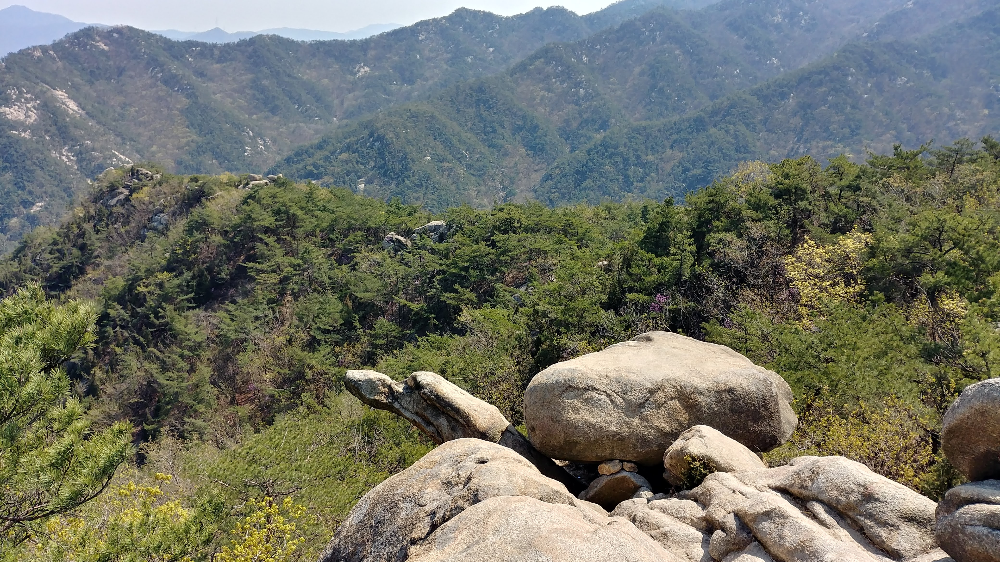 |  |
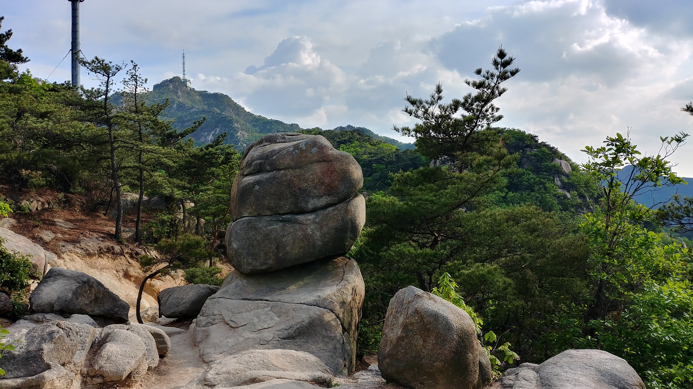 | |
|---|---|---|---|
| 거북바위 | 하마바위 | 목탁바위 미소짓는얼굴 |
천년송 |
관악산 정상 주변
| 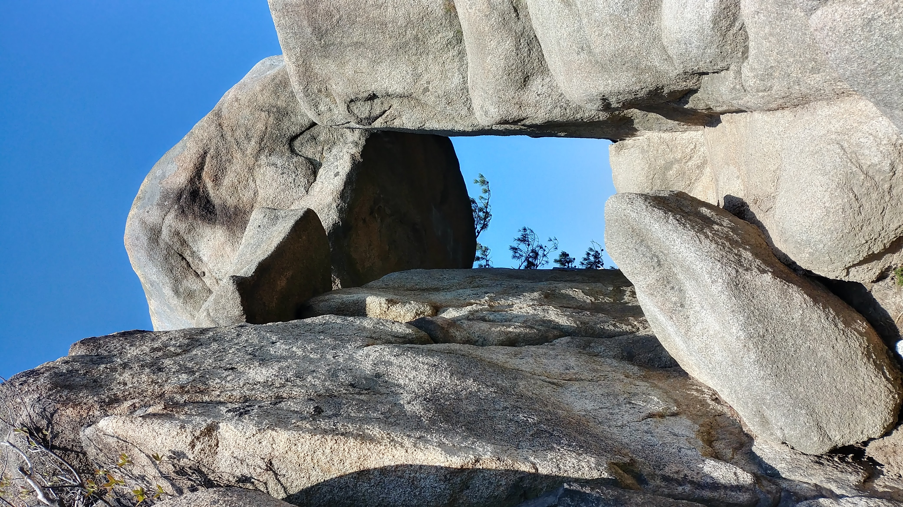 | 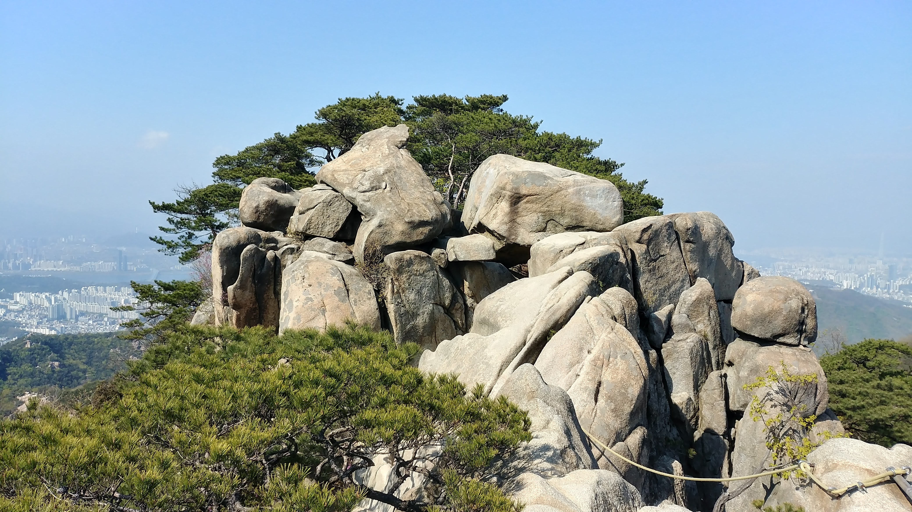 | 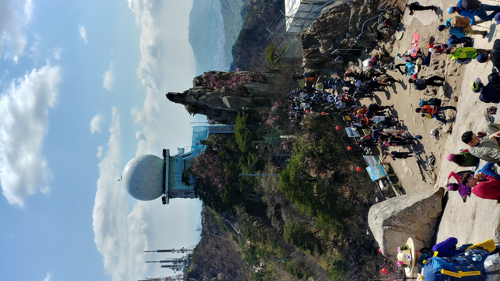 | 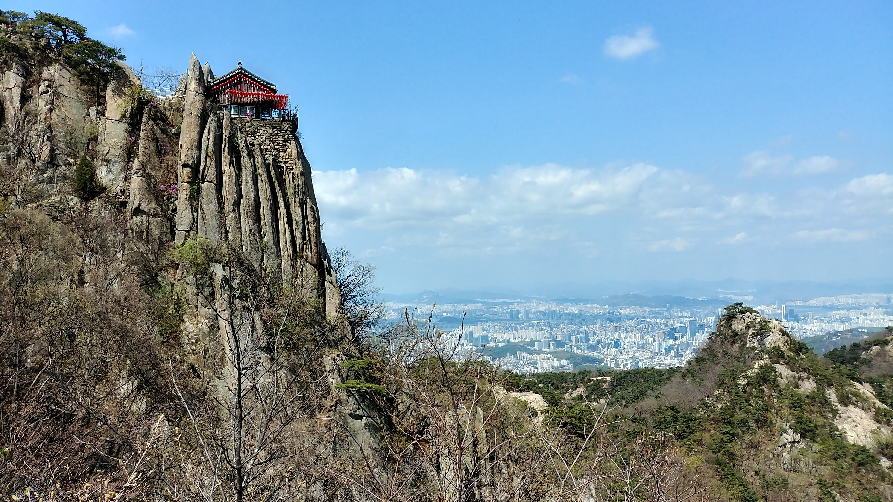 |
|---|---|---|---|
| 통천문 | 한반도 바위 | 불꽃 바위 | 연주대 |
| 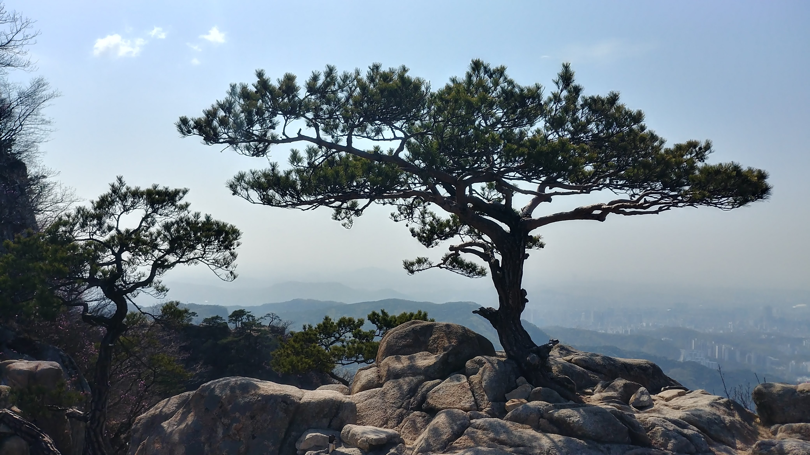 | 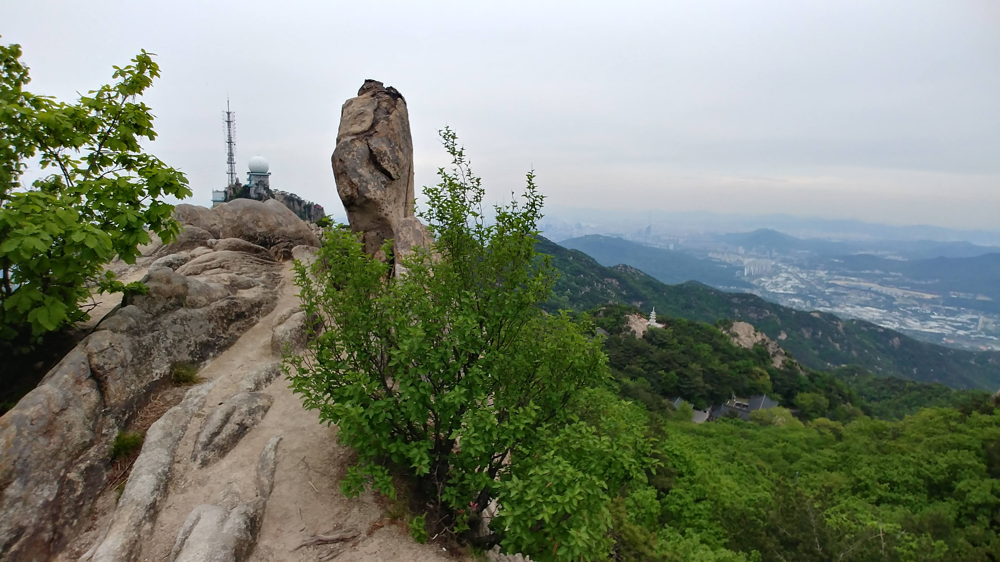 | 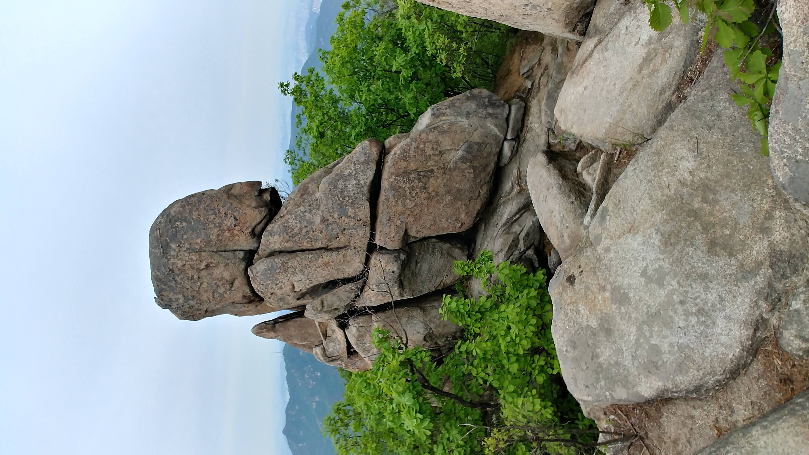 | |
| 소나무 | 소머리바위 | 부처상? | .. |
수영장 능선
|
 |
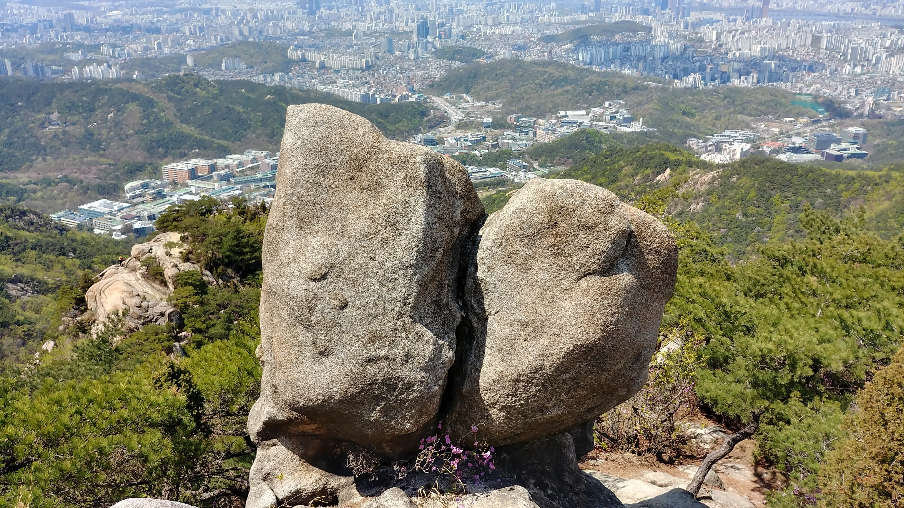 | |
|---|---|---|---|
| 탱크바위 군함바위 |
토끼바위 발바닥 바위 |
키스바위 | ... |
자운암 능선
 |
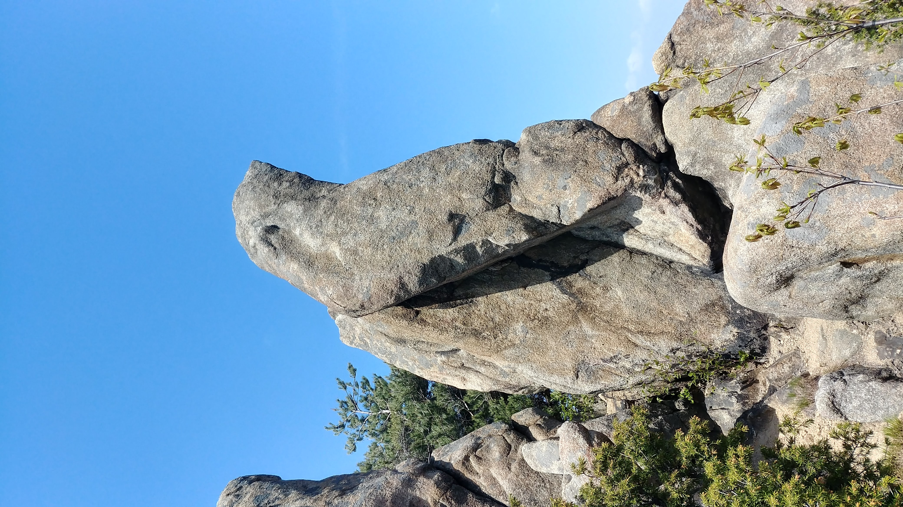 | |
|
|---|---|---|---|
| 자라바위? | 물개바위 | ... |
장군 능선
| 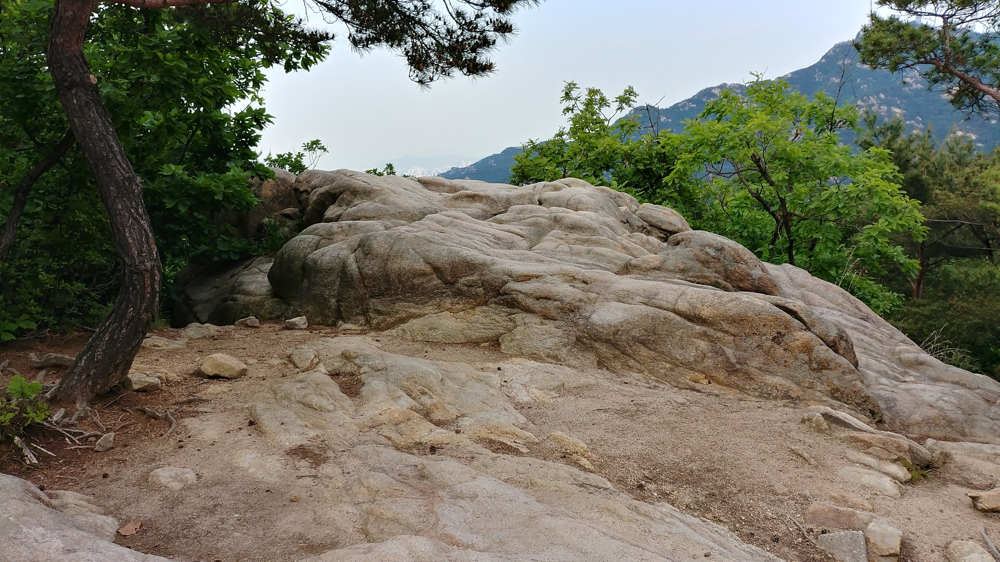 | |
|
|
|---|---|---|---|
| 거북바위 | ... | .. | ... |